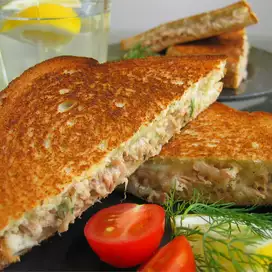

French Toast
Homepage

Description
Simple Tuna Melt Recipe for Lazy Hungry People
Ingredients
- 1 (5 ounce) can tuna, drained
- 1/2 small onion, minced
- pepper to taste
- 12 slices pickled jalapeno/li>
- 2 English muffins, split
- 1 teaspoon vanilla extract
- 1 tablespoon white sugar
- 4 slices Cheddar cheese
Steps
Step 1:
- Preheat oven to 350 degrees F (175 degrees C).
Step 2:
- In a small bowl, combine tuna, minced onion, and black pepper. Divide mixture onto 4 halves of English Muffins. Arrange 3 slices jalapenos on each muffin half. Top each with a slice of Cheddar cheese. Place on baking sheet.
Step 3:
- Bake in oven for 10 minutes, or until cheese begins to bubble.